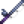
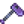
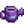
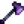
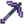
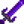
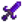
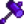

Forge
The Forge is located on Floor 10 in the Volcano Dungeon. It is used to upgrade weapons, enchant weapons and tools, combine rings, and change weapon appearances.
After obtaining Combat Mastery, the player can craft a Mini-Forge, which acts exactly the same as this one and can be placed anywhere.
Weapon forging
A melee weapon (dagger, hammer, or sword) can be forged up to three times to improve its stats. Each forge costs one gem and 10/15/20  Cinder Shards depending on how many times it was previously forged.
Cinder Shards depending on how many times it was previously forged.
Using a  Diamond as the gem fills all remaining forge levels with random upgrades, but consumes only 10 Cinder Shards.
Diamond as the gem fills all remaining forge levels with random upgrades, but consumes only 10 Cinder Shards.
Note that "level" refers to the number of times a weapon was forged with the specific gem. So for instance, if a weapon was forged with a Ruby, then an Emerald, and then an Amethyst, the weapon stats will have +10% attack power, +2 speed, and +1 weight.
| Gem | Effect |
|---|---|
| More | |
| Aquamarine | More |
| More | |
| More | |
| More | |
| More |
Enchantments
A random enchantment can be added to any melee weapon or tool, with the exceptions of the Scythe, Golden Scythe, Iridium Scythe, and Trash Can. This costs one  Prismatic Shard and 20
Prismatic Shard and 20  Cinder Shards.
Cinder Shards.
A random innate enchantment can be added to any melee weapon, with the exceptions of Galaxy weapons and Infinity weapons. This costs one  Dragon Tooth and 10
Dragon Tooth and 10  Cinder Shards.
Cinder Shards.
Each weapon or tool can have only one enchantment and one set of innate enchantments at a time, and the applied enchantments are random. However, another enchantment can be applied (at the same price) to replace an existing one. Tools track the previous two enchantments applied to them so they're not reselected when applying a new enchantment.
Upgrading a tool keeps its enchantment.
Enchantments are determined based on the total number of times the player has enchanted any tool. Therefore, reloading the day and changing the order the tools are enchanted will result in getting different enchantments.
Combat enchantments
Only applies to melee weapons (can't be applied to a slingshot)
| Name | Effect |
|---|---|
| Artful | 50% cooldown on special moves. (Stacks multiplicatively with Acrobat for a total of 75% cooldown reduction.)[1] |
| Bug Killer | Double damage to grubs, flies, bugs, spiders, & rock crabs. Allows killing armored bugs. |
| Crusader | 50% more damage to mummies, ghosts, skeletons, and void spirits. Allows killing mummies without the use of bombs. |
| Vampiric | 9% Chance to regain some health on kill. Amount healed is 9% to ≈10.67% of monster's maximum health and does not scale with weapon damage. |
| Haymaker | More fiber is earned when collecting weeds. Also a chance to collect hay. Cutting weeds has a 50% chance of also dropping a fiber, and 33% chance of extra hay (directly into silo on farm, else into inventory). |
Innate enchantments
Only applies to low-level melee weapons (can't be applied to Galaxy/Infinity weapons, any weapons with a level of at least 15, or a slingshot). There are 2 sets of innate enchantments. A weapon can have at most one enchantment from each set.
The way the stat-affecting enchantments combine with each other can be nontrivial. See the individual stats' pages for more details.
When enchanting weapons at the forge, one enchantment from this set may be given, but it is not guaranteed:
| Name | Effect |
|---|---|
| +1-2 Defense | |
| −1-5 Weight | |
| Slime Gatherer | Increases Slime Dropped from Slimes by 1 + random(0, sqrt(slime's max health / 3)). Also triggers when killing Big Slimes. The amount of slime dropped is not affected by any loot-modifying buffs. |
When enchanting weapons at the forge, one enchantment from this set is guaranteed:
| Name | Effect |
|---|---|
| Slime Slayer | Increases damage done to Slimes by 33% + 1. Does not affect Big Slimes. |
| +25-75 Crit. Power | |
| +1-3 Crit. Chance | |
| +1-5 Attack | |
| +1-X Speed |
Tool enchantments
| Name | Axe | Rod | Hoe | Pick | Can | Pan | Effect |
|---|---|---|---|---|---|---|---|
| Auto-Hook |  |
Automatically hooks fish/junk when they bite (which starts the fishing minigame if it hooks a fish). | |||||
| Archaeologist |  |
For hoe: Double chance of finding artifacts in artifact spots. For pan: 4x chance to find Artifact Troves, 2x chance to find Bone Fragments, 3.5x chance to find artifacts. | |||||
| Bottomless |  |
Infinite water. | |||||
| Efficient |  |
 |
No energy drain when used. | ||||
| Generous | For hoe: 50% chance of double item after digging. For pan: Increases maximum amount of found non-ore items, see Pans for more details. | ||||||
| Fisher | 10% chance of receiving a location-appropriate fish as a panning reward. | ||||||
| Master | Adds an extra fishing level to the player while held. | ||||||
| Powerful | Adds 1 extra power level for pickaxe, 2 for axe. | ||||||
| Preserving | 50% chance that bait and tackle aren't consumed on use. | ||||||
| Reaching | Increased charge-up capacity for greater area of effect. Increases the maximum area of effect to 5x5 tiles. | ||||||
| Shaving | Extra 3 regular wood from Oak, Maple, Pine, and Palm trees. Hardwood from Mahogany trees. Red Mushroom from Mushroom trees. Fiddlehead Fern from Green Rain Tree Type 3. Chance of extra hardwood from stumps. Chance of extra produce from giant crops. | ||||||
| Swift | For hoe: charge speed is 33% faster. For all: default swing speed is 33% faster. |
Infinity Weapons
A Galaxy Soul can be forged into a galaxy weapon at the cost of 20 Cinder Shards. Doing this 3 times (at a total cost of 3 Galaxy Souls and 60 cinder shards) will turn the weapon into a more powerful "Infinity" weapon. Adding just 1 or 2 shows that Galaxy Souls have been applied but does not otherwise affect the weapon. The weapons keep their enchantments and gem forgings when they are made into Infinity weapons. They are given the new Infinity weapon appearance even if they were previously forged into a new appearance.
| Image | Name | Description | Ingredients |
|---|---|---|---|
| Infinity Blade | The true form of the Galaxy Sword. |  Galaxy Sword (1) Galaxy Soul (3) | |
| Infinity Dagger | The true form of the Galaxy Dagger. |  Galaxy Dagger (1) Galaxy Soul (3) | |
| Infinity Gavel | The true form of the Galaxy Hammer. |  Galaxy Hammer (1) Galaxy Soul (3) |
Weapon Appearance
Two weapons can be merged through the forge. The resulting weapon will have all the stats and info of the first weapon (left slot), but the appearance of the second weapon (right slot). Only weapons of the same type can be merged. Slingshots cannot be merged. The second weapon will be consumed.
This costs 10 Cinder Shards.
A Galaxy Weapon that changed its appearance in this way would lose its appearance after being forged into an Infinity Weapon.
Combined Rings
Two different rings can be combined into one with stacked effects. This costs 20 Cinder Shards.
This has two restrictions:
- Two of the same ring cannot be combined into one. (However, two different rings with the same effect can be combined, like the Glow Ring and Glowstone Ring. Their effects will stack in the same way as wearing both rings separately.)
- Three or more rings cannot be combined into one. (i.e., a combined ring can't be further combined).
Unforge
Weapons and combined rings can be unforged to reset its properties.
- For a weapon, unforging removes all forge upgrades (but not enchantments) and resets its appearance.
- For a combined ring, unforge splits it back into the original rings.
Unforging is free, but only returns some of the Cinder Shards used to forge the item.
To begin the unforging process, place the item for unforging into the left square slot. Then click the red ⨯ symbol near the bottom right corner. The unforged item(s) will appear in inventory, along with any returned Cinder Shards.
Fishing
The Forge is the only floor of the Volcano Dungeon where fishing can occur. It is one of two locations in the game where players can catch Lava Eels. Crab pots cannot be placed in the forge. There is a 5% chance the player can catch a present that contains the painting 'Physics 101'. This painting can only be caught once per player per save file.[2]
Secrets
- After achieving Perfection, a red monkey can be interacted with to obtain a secret hat.
- The plaque above the Forge contains an enciphered message.
- An Ancient Doll can be thrown into the lava to obtain a secret item.
References
History
- 1.5: Introduced.
- 1.5.2: Tools now track the previous two enchantments that were added to them and prevent those enchantments from being selected again.
- 1.6: Mini-forge added as a placeable version of the Forge, some tools gained new options for enchantments. Added Innate enchantments.
- 1.6.4: Shaving enchantment now causes tree-specific drops: (fern → fiddlehead fern, mushroom → red mushroom, mahogany → hardwood)